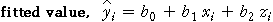
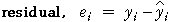

Fitted values
For most data sets, a linear equation of the form
y = b0 + b1 x + b2 z
cannot exacty predict the response from the two explanatory variables — the crosses on the 3-dimensional scatterplot do not fall exactly on a plane. For the i'th individual, the prediction that is made from the equation is called the fitted value for that individual.

Residuals
The difference between the fitted value and the actual response is called the individual's residual.

Body fat
At the start of this section, we displayed the relationship between percentage body fat and various other measurements from 252 men. To make the diagrams clearer, we will now only consider a selection of 25 of these men.
The diagram below shows a scatterplot of body fat, abdomen circumference and height, and the plane representing a linear equation that might be used to predict body fat,
Body fat = 22 + 0.53 Abdomen − 0.80 Height
We will see later how this equation can be improved.
Click on crosses to display the actual and fitted body fat percentages for our group of 25 men. The residuals are shown as red vertical lines.
The residuals are vertical distances between the crosses and the plane.
Rotate the scatterplot to see better how the residuals relate to the plane.